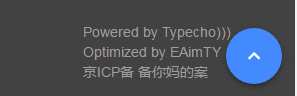
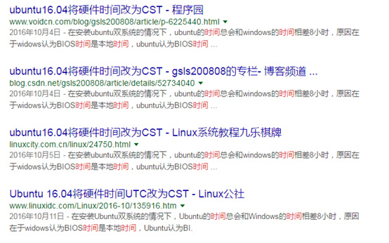

为什么我要写独立域名的博客
文章目录
年前，自由职业者社区发起了一场"博主交流会总结"，聊聊写博客有关的问题，邀请我进来一起讨论建国建博大业，我因为太害羞、不想多人视频给婉拒，嗯嗯~ o(￣▽￣)o。
我为何要使用独立域名的博客，而不是使用CSDN、博客园、新浪博客甚至是BlogSpot等平台？
要回答这个问题，首先要解决一个基础问题：
我为何要写博客
R0UTER曾经翻译过一篇文章，名为《你应该写博客 —— Steve Yegge》
作为一名非IT专业的民工（其实我是IT专业的，只是觉得自己太渣对不起这个专业，or/and vice versa），我觉得写博客的过程完全就是一种最朴实的学习之路。
我为何要写博客？
写博客的动机
某一年因失恋体验了"明朝散发弄扁舟"的感觉，后来，发现科学上网有点难哦，于是就去DigitalOcean买了个VPS，搭建起了Shadowsocks（不幸的是搭建完没几天clowwindy就被请走喝茶了）。搭建完了呢，觉得有些浪费唉，就又顺手搭建了一个博客玩玩，那时候我还在使用免费的cf域名。
写博客的过程
最开始的时候，我以新用户的身份从阿里云免费领了一个15天的ECS，在那上开始真正接触到Linux命令。在此之前尽管我是双系统，但我的经验仅限于鼠标乱飘和不知道为何的apt update、apt upgrade
在真正开始动工搭建博客的时候，一切就都不同了——我不仅需要把储备的Linux知识全部拿出来用，还需要学习一些非常基础的网络知识，HTML，甚至需要知道如何利用终端来完成我的任务，哪怕是看《星球大战》。
这就够了吗？不，我选择了一个 名为WordPress的CMS，选择这个CMS之后我花了好段时间对它的特性进行一些了解、选择了一个好看简洁的主题。
或许这就够了？不，那时候我还没有统筹规划的想法，不知道自己内心在想什么，也不知道该如何像一国之君一样运营博客，也没给自己定下统一的排版标准——这直接导致了我后来花了很多时间重写甚至是删掉以前的博文。
写博客的结果
转眼已经开博一年半了，我深深地认为：写文章本身就是对知识的一种梳理，在梳理的过程中更能学到更多的知识。
有的时候会有这样的感觉，你知道这种东西，但是让你用文字表达出来，你却写着写着就给自己说蒙圈了，甚至是噎住写不出来了。这是表达能力的欠缺。尽管一个人可能的表达能力可能不太好、技术水平很高，但是面试的时候，或者是一些不需要谦虚需要表现的时候，不表达出来不说出来，那可就是在说自己什么都不会呀。
缺少历练，外加快餐文化、碎片式阅读乃至于封闭圈子（主要指微信）的恶劣影响—— 人们倾向于被那些可能居心叵测的大V们牵着鼻子走，人们倾向于groundless belief；人们越来越不会表达自己的想法，越来越不会给自己的想法找到可靠的根据，越来越被牢牢地拴在某个猪窝狗洞内。
写博客的这一年半里，我越来越敢说出自己的想法，越来越敢立下flag，也因此而结实了一些志同道合的朋友、甚至是勾搭上了可能这辈子都无法忘记的那个人 哦不是谁我不记得了。
写博客的目的
如果有人要问，你写博客的目的是什么？其实总结起来还是很简单的，我希望能够在提升自己的知识水平的同时帮助到他人；我相信知识的自由与传播，我希望我能够变得更强。
但是写博客，在有些时候就好似信息的孤岛。如果没有评论系统，没有我和访客的交互，那么所有的一切真的就只是孤岛，只是留给我孤芳自赏。
而我，永远也无法忘记，我是因何认识了你。
总结
就目前为止，我是这个博客唯一的一名作者。尽管没什么名气，没什么访问量，也不是全职博主，我也依旧乐此不疲的写着博客。恰如博客曾经的副标题和footer所说，执着于心，谦和之中见卓越。
为了历练自己、总结经验教训、做个记录、分享点经验、发点牢骚，可能还会装个逼、勾搭点妹子，我搭建了一个属于自己的自留地。
可是问题是，为何我要选择独立域名的博客，而不是选择各种博客平台？为此我付出了时间、金钱和数不清的精力。
我为何要使用独立域名的博客
好吧，说了那么多"我为何要写博客"，下面咱来说说为啥我要选择独立域名的博客。
最早的时候，大概四五年前，我还是一名 "能写出来深情文章的作者"，那时候还是高中，微信还没有这么火、微博也很少有人玩，那个时候韩寒还在写博客，我自然而然的就把QQ空间的日志作为了自己的"博客"，直到两年前，我还在QQ空间上发表一些所谓的"博文"。
最终我还是放弃了它，并且也没有转入新浪博客、搜狐博客，技术性比较强的CSDN、博客园，甚至也没有转入现在大红大紫的微信公众号，而逆风选择了自己的独立域名博客。
为何我要选择独立域名？
所谓独立域名，就是形如example.com这样的，虽说俺不是很喜欢tk、cf、ml（啊好邪恶），但是好歹人家也算是独立域名，是吧…
之所以选择独立域名，不仅仅是为了逼格…可玩性比较高，几乎没有限制。咱可以玩玩子域名，哪天搞出来一个love.bennythink.com表白多好玩嘛
为何选择VPS而不是GitHub Pages
提到独立域名，这里就要稍微跑题下，为何我选择VPS而不是GitHub Pages。
原因其实很简单，我是一个追求个性的人，我希望我的发展不会被我使用的东西所限制：Pages上的限制稍微有一点多。
诚然，GitHub Pages有很多优点，成本为零、博客是静态的，自带加速CDN，还能抗点DDoS，我无需去担忧数据库、安全、备份、维护等工作，我只管写，然后Push就好了。而且有了Git作为版本控制，我再也不用纠结于文章的历史等（当然别人也可以看到你所有写过的文章，包括自己嫌弃死的文章）
同时Pages也有一些缺点，（对于大陆来说）访问可能不稳定CDN加成很厉害的哦、对搜索引擎不太友好、自定义程度偏低（Jekyll的插件需要做一些小工作才能在Pages上使用）、隐私保护略差（毕竟git 的历史记录）、评论有点困难。最重要的一点是，自定义域名的情况下，Pages不支持HTTPS哦不已经支持了。
在这个全站HTTPS的时代，无论页面是否存在敏感信息，都应该不遗余力的使用HTTPS，这样不仅仅是对我的访客负责，也是对自己负责。HTTPS的目的不仅仅在于保护敏感信息的安全传输，还在于保护页面内容的完整性、避免运行商劫持加入广告。
从某种程度上讲，Pages也好似另一种博客平台，只不过要比一般的平台的自定义程度要高一些（前提是你懂CSS和HTML等前端知识）。还有就是评论的问题，目前最好的解决方案就是disqus，然而disqus在大陆嘿嘿嘿了。所以嘛~~！
当然啦，如果你爱死了静态博客、又无法忍受Pages的缺点，那最好的方案就是VPS上搞静态博客啊。
为何不选择博客平台而要搭建自己的博客
需要说明的是，博客平台也有着自己的一些优点，比如说访问比较快速、不用投资、几乎不用维护、SEO良好，对于很多人来说，博客平台就是很好的选择了，但这仍旧无法消除自建的博客对我的诱惑。
博客平台可定制性太差
早些年的时候，我曾经为QQ空间的装扮而烦恼，每个月都从我的某个土豪黄钻好友索要装扮，后来渐渐地发现，我再怎么选装扮，也是腾讯定好的模板，也不够有自己的个性。
其他的平台也大抵如此，你跳不出公司给你的圈子，最多也只能做到把手臂放在围栏外面感受一下自由的气息（比如说编程随想大改BlogSpot评论区）。
但是，如果我选择自己的博客，我将有权决定我的博客是什么样子的，我可以选择跳入WordPress这个围栏，还是Typecho，或者Jekyll、Hexo等静态博客，甚至是vim手写HTML都可以。
我可以在footer中吐槽下备案制度，我可以选择自己的主题，哪怕是跳入了心甘情愿的围栏，我也可以在围栏上开门（修改、创建自己的主题，增加插件），大肆的自定义，而这些是博客平台比较难做到的。突然想说微信公众号的排版有多么复杂、规则有多么繁琐、内容有多么封闭了。

审查严重
在国内的这些平台上，你不能说党国的不好，甚至是因为一致性原则的影响，从内心里你开始反抗"党国不好"的这个想法，进而认为党国其实也没那么不好。
再退一步，红色青年雷洋都不能再提、雾霾都成政治问题。作为搞IT的，你只懂技术是不行滴，同样还应该有很强的思辨能力，否则最终也就是沦落于给猪干活的马（《动物农场》）
在自己的博客上，说出自己的想法而不用担心被和谐的可能性大大提高了。没错，这几年我们见证了可能吧被墙，见证了月光博客被要求删帖，见证了无数个人网站被关闭，我们见证了越来越糟糕的网络环境和政治体制，但是至少我们不会自我阉割、不会自我审查，因为我们深知自由是天赋人权。
安全堪忧
你放心把你的数据交给那些国内的土鳖公司吗？你知道他们是如何备份你的数据的吗？你如果想要一份你全部博文的副本，除了手动复制粘贴，还有别的方法吗？
抛开这些fundamental concerns, 网易、CSDN被脱裤（还丫的是明文密码，好歹hash一下啊），能忍？
退一万步，没有全站HTTPS和HSTS的保障是万万不可以的。我很怕被劫持，很讨厌无耻运营商加上的广告，我希望小锁头能够给我的访客足够的安全感。
在自己的博客上，你可以为自己的地盘负责，你可以HTTPS+HSTS，你可以对自己的数据负责。你认为WordPress只是把密码hash了下准备改造，结果发现是加了盐的——尽管这需要更多的知识，这不就是我们创建博客的目的吗？
抄袭泛滥
文章被转载，这是在说明我的文章对别人也同样有用；但是如果不引用来源标明URL，那么就算是抄袭。抄袭这种情况，在中文圈里可以说得上是很常见了，这是不尊重知识的表现。大环境下的抄袭泛滥，无可奈何…
不搜不知道，一搜吓一跳，很多在这种博客平台上发的文章都会被迅速转载（或者说是抄袭更合适）到各种采集站，哪怕你这个博客不是那么火（个人感觉这个情况在博客园上更明显）。

在上图中，文章的内容几乎是完全一样的，对于用户来说想要找到真正的原创作者往往不是那么容易，有点良心的会告诉你作者是谁，没良心的直接成原创。
相比之下，个人博客的抄袭往往要比平台慢一步，直接搜索关键字也往往会进入原创者的站点而不是采集站。为啥捏？没流量呗…
再次的提下CC-BY-NC-SA协议：
本博客所有原创文章，如未特殊声明，均采用知识共享署名-非商业性使用-相同方式共享 4.0 国际许可协议（CC-BY-NC-SA）进行许可，即：
这意味着，如果你转载，你：
需要保留我的署名（在正文中标注并保留原文、作者和原始链接)；
不得为商业目的而使用本作品；
若改变、转变或更改本作品，你需要同样使用CC-BY-NC-SA 4.0
学习到更多知识
在搭建博客的过程中，你需要了解基础的网络知识，知道什么是DNS、IP、HTTP，为此你需要去搜索，需要去学习。
在你选好了域名之后，你需要去学习Linux的基础知识，再之后你可能需要学习node.js, python，或者是学习Nginx、MySQL、PHP的相关知识。
如果你想全站HTTPS，那么你又要学习配置Nginx，需要学习如何找CA颁发证书。如果你有能力甚至会学习到HTTPS/SSL/TLS的设计历史与原理。
可能你得需要学习markdown（好吧这东西几分钟就能学会），需要学习git。
可能你的CMS没有邮件通知系统，于是你就用了前人的轮子甚至是自己用PHP造了一个。
如果你想推广自己的网站，就要去学习一些SEO的知识，你知道该如何写robots.txt, 知道如何让蜘蛛多来爬。
这个可能可以一直列下去，或许这样已经打消了很多人想要搭建博客的念头，但是：任务驱动式学习是最好的动力。
而在一个博客平台上，你一般是不太容易学习到这些知识的——通常的模式是所见即所得，只管写，哪有那么多。
最后的总结
博客平台有很多好处，也有很多缺点；但是对我而言，博客平台的缺点是最致命的：我无法忍受审查（准确地说毫无理由的审查），我喜欢个性，讨厌抄袭，这些恰恰是博客平台不能提供给我的。
回到文章的最开头，问题是，为什么我要写独立域名的博客？
因为我爱得深沉呀❤
本站默认采用CC-BY-NC-SA 4.0协议进行授权 转载必须包含本声明，并以超链接形式注明原作者和本文原始地址


评论
68 条评论